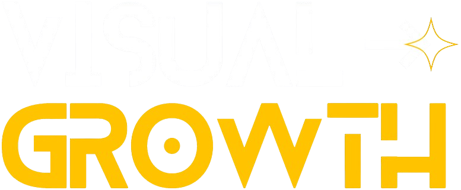

Antes de despegar, auditamos cada fuga de tiempo y dinero. No tocamos una sola línea de ejecución hasta saber exactamente dónde está el cuello de botella.
El plan deja de ser una idea. Empieza a moverse.
Diseñamos el plan con ICE Score —impacto, confianza, esfuerzo—. Priorizamos lo que genera tracción real, no ruido.
Ciclos de máximo cuatro semanas. Lanzamos, medimos y ajustamos. Velocidad de startup para validar resultados antes de escalar.
Cuando algo funciona, echamos gasolina. Automatizamos lo validado y escalamos inversión y operación sin perder el control.
15 preguntas. 3 minutos. Un roadmap de crecimiento personalizado con 3 insights accionables inmediatos.